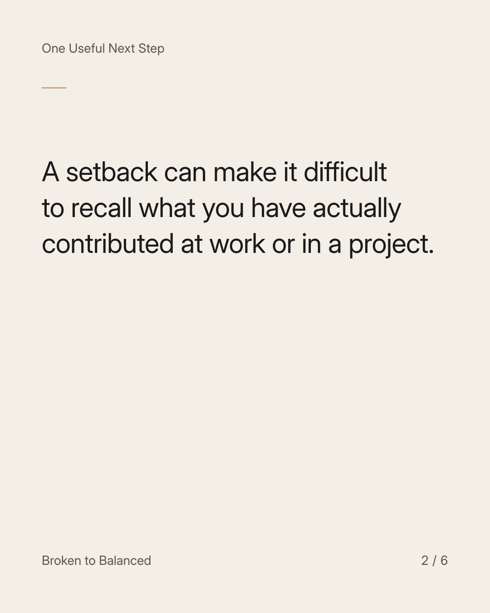
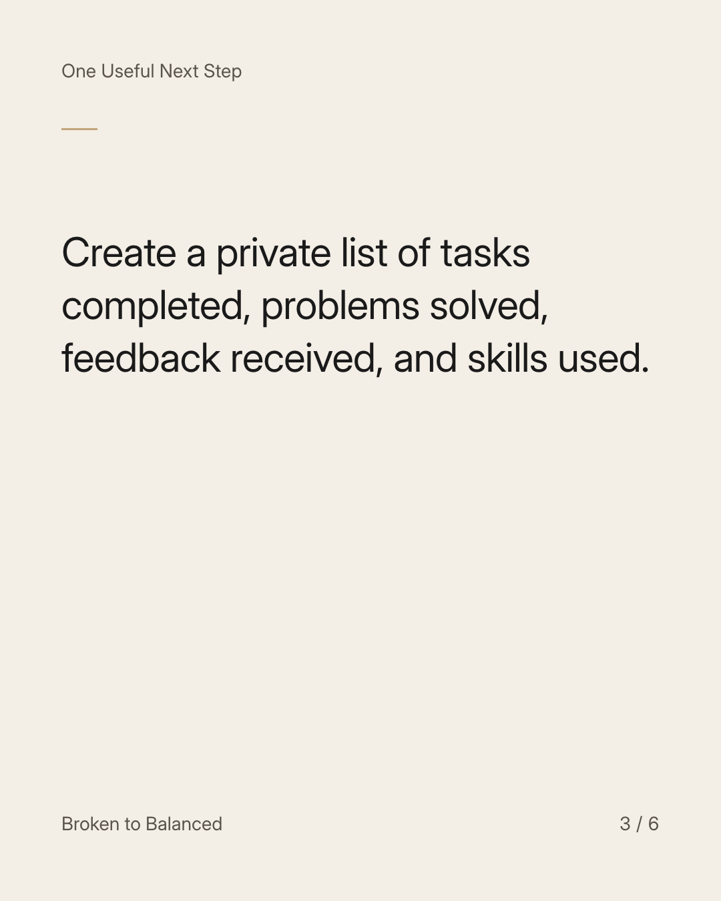
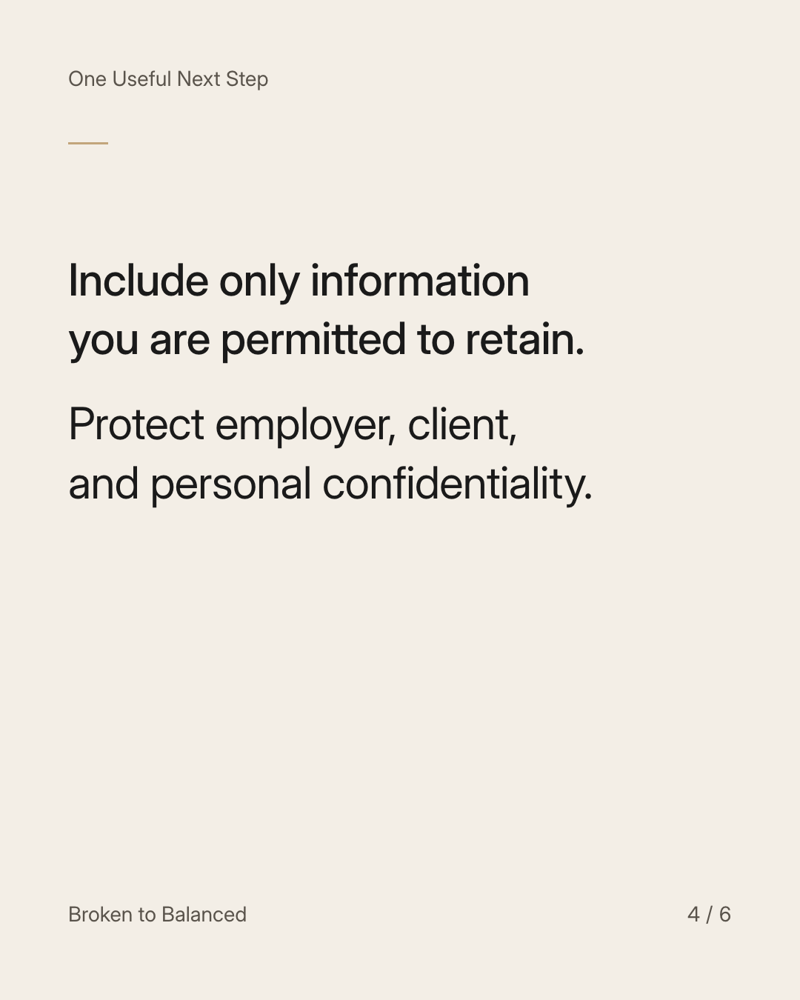
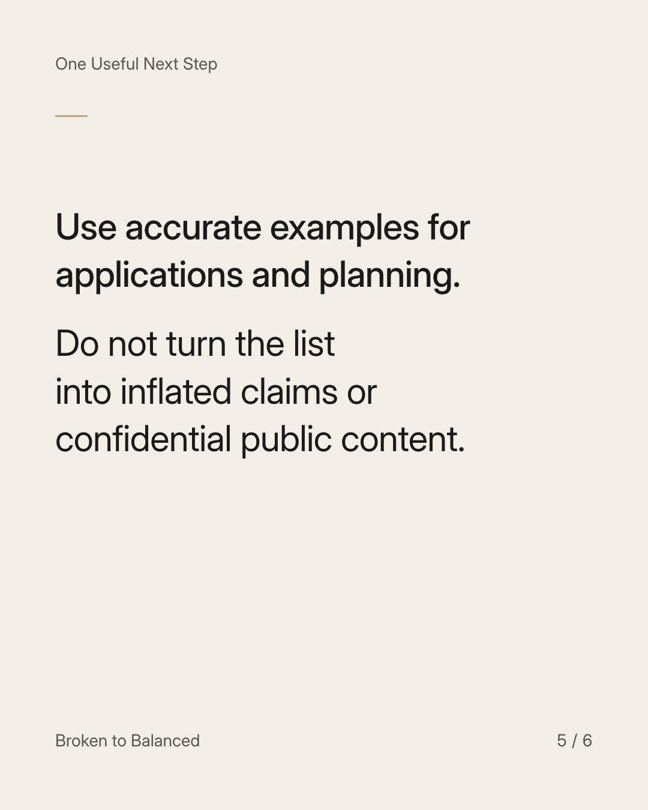
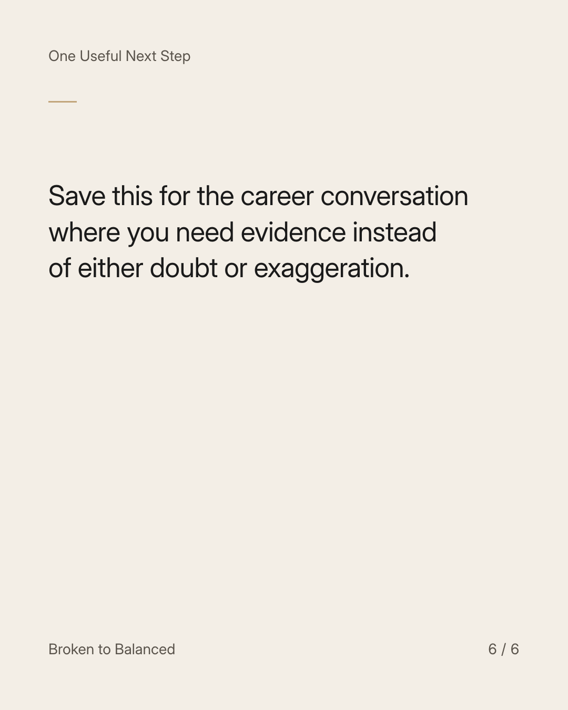

Exact text and accessibility text
Keep evidence of your skills somewhere you can find it.
Slide 1 of 6. Keep evidence of your skills somewhere you can find it.


Exact text and accessibility text
A setback can make it difficult to recall what you have actually contributed at work or in a project.
Slide 2 of 6. A setback can make it difficult to recall what you have actually contributed at work or in a project.


Exact text and accessibility text
Create a private list of tasks completed, problems solved, feedback received, and skills used.
Slide 3 of 6. Create a private list of tasks completed, problems solved, feedback received, and skills used.


Exact text and accessibility text
Include only information you are permitted to retain. Protect employer, client, and personal confidentiality.
Slide 4 of 6. Include only information you are permitted to retain. Protect employer, client, and personal confidentiality.


Exact text and accessibility text
Use accurate examples for applications and planning. Do not turn the list into inflated claims or confidential public content.
Slide 5 of 6. Use accurate examples for applications and planning. Do not turn the list into inflated claims or confidential public content.


Exact text and accessibility text
Save this for the career conversation where you need evidence instead of either doubt or exaggeration.
Slide 6 of 6. Save this for the career conversation where you need evidence instead of either doubt or exaggeration.
Exact caption
Plain-text fallback: select and copy the caption.